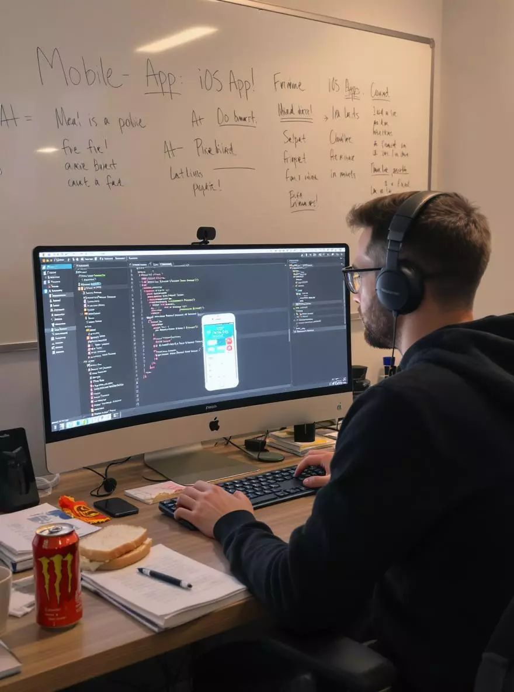

Portafolio de Programador Web
Tecnólogo en Desarrollo de Software con experiencia en desarrollo web

Resumen Profesional
Tecnólogo en Desarrollo de Software enfocado en el desarrollo web y el diseño de interfaces dinámicas. Cuento con más de un año de formación y práctica constante en la construcción de aplicaciones interactivas utilizando JavaScript, HTML y CSS, complementando mi perfil con bases técnicas en Python y Django adquiridas durante mi trayectoria académica. Asimismo, gestiono el control de versiones mediante Git y GitHub y poseo fundamentos en el manejo de bases de datos relacionales como MySQL y SQL Server. He consolidado mis competencias mediante el desarrollo autónomo de proyectos funcionales, perfeccionando mi lógica de programación y sentido estético de interfaz (UI). Me destaco por mi mentalidad proactiva, adaptabilidad y un fuerte compromiso con el trabajo en equipo. Actualmente busco incorporarme como desarrollador junior o aprendiz, con la meta de aportar soluciones eficientes mientras continúo mi evolución hacia el desarrollo full-stack en un entorno profesional.
Mi carrera & experiencia
Inicio y Fundamentos
Primeros pasos
Culminé mis estudios de bachillerato e inicié mi camino en la tecnología de forma autodidacta. Con el objetivo claro de orientar mi perfil hacia la programación, comencé a capacitarme en herramientas esenciales y lógica básica a través de plataformas de aprendizaje online como Udemy.
Formacion Tecnologica Superior
Estudios universitarios
Ingresé a la educación superior para estudiar formalmente Desarrollo de Software. Durante este periodo, me dediqué a profundizar en la teoría informática, participar activamente en proyectos académicos y estructurar las bases de mi perfil técnico.
Diseño Grafico Freelance
Experiencia independiente
Emprendí como diseñador gráfico independiente, explorando la creación de contenido e identidades digitales. Esta faceta creativa agudizó mi sentido estético y de experiencia de usuario (UX), permitiéndome además experimentar con la producción audiovisual en YouTube.
Especializacion Frontend
Autodidacta y proyectos
Conecté mi experiencia en diseño con la programación, descubriendo mi pasión por el Desarrollo Frontend. Comencé a construir mis primeros proyectos web personales de forma independiente, aplicando la creatividad visual al código real.
Graduacion e Inicio Productivo
Titulo profresional
Obtuve mi título oficial como Tecnólogo en Desarrollo de Software. Con esto, di inicio a mi etapa productiva enfocado en insertarme en el mercado laboral como Desarrollador Junior, listo para aportar soluciones eficientes en entornos reales.
Evolucion Continua
Autodesarrollo y certificaciones
Me mantengo en constante capacitación autodidacta para dominar tecnologías de vanguardia. Actualmente, perfecciono mis habilidades mediante certificaciones de JavaScript Avanzado y Diseño Web Responsivo en freeCodeCamp y Udemy, mientras busco mi primera experiencia profesional en el sector.
Proyectos Principales

Mis Notas
Con este proyecto continuo colocando a prueba mis conocimientos pero en esta ocacion integro la IA en el desarrollo de este.
Visitar Proyecto
HTML y CSS
Este es un proyecto realizado con el fin de aplicar HTML y CSS de una manera mas avanzada para mis habilidades del momento.
Visitr Proyecto
Juego de Snake
Este es un juego inspirado por un tutorial de programacion, realizado con el fin de poner en practica mis conocimientos en las tecnologias de frontend.
Visitar Proyecto